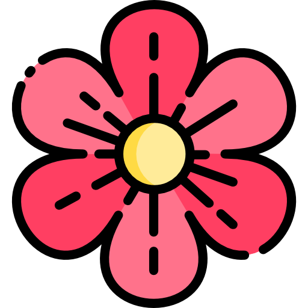

My Background
 Hi! 🖖My name is Miranda Carou Laiño. I’m from a little town in the north of Spain called Boiro where I lived until I went to Ourense for my university studies. In HighSchool I was a member of the Math Club 🧮 and I assisted in the LV Mathematical Olympiads 🏆. Since I was a child I have always been interested in Physics ⚛️ and Maths but in HighSchool I discovered Computer Science and that field caught all my attention. That’s why I graduated in Computer Science 💻 but I will never leave my interest in Physics and I hope one day I’ll be able to combine both of them.
I could describe myself in 3 words: Optimistic 😊, Hard-working 💪 and Communicative 🗣️. Talking about hobbies I really like reading, learning asiatic languages and practicing surfing 🏄in my free time. My favorite writer is Kazuo Ishiguro ✍️, my favorite book is “Klara and the Sun” 📚 and I’m currently studying Korean 🇰🇷 .
I hope I’ve satisfied your curiosity !! ❤️
Hi! 🖖My name is Miranda Carou Laiño. I’m from a little town in the north of Spain called Boiro where I lived until I went to Ourense for my university studies. In HighSchool I was a member of the Math Club 🧮 and I assisted in the LV Mathematical Olympiads 🏆. Since I was a child I have always been interested in Physics ⚛️ and Maths but in HighSchool I discovered Computer Science and that field caught all my attention. That’s why I graduated in Computer Science 💻 but I will never leave my interest in Physics and I hope one day I’ll be able to combine both of them.
I could describe myself in 3 words: Optimistic 😊, Hard-working 💪 and Communicative 🗣️. Talking about hobbies I really like reading, learning asiatic languages and practicing surfing 🏄in my free time. My favorite writer is Kazuo Ishiguro ✍️, my favorite book is “Klara and the Sun” 📚 and I’m currently studying Korean 🇰🇷 .
I hope I’ve satisfied your curiosity !! ❤️